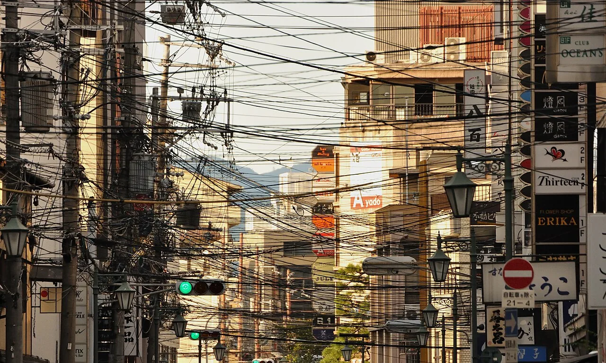
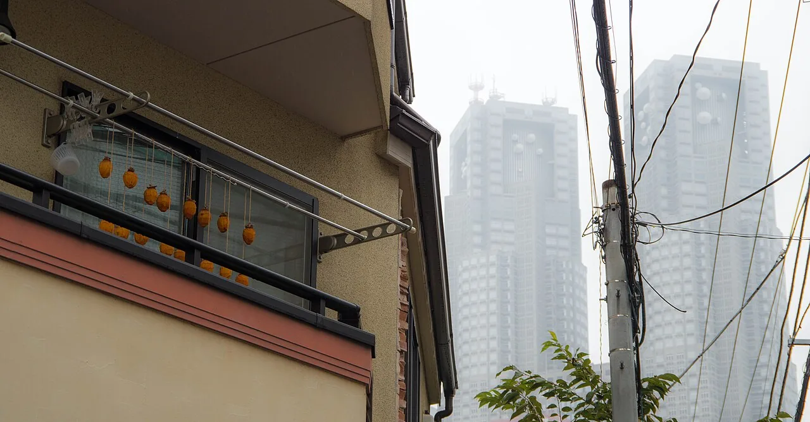

Japan's power line lovers
Take a photograph anywhere in urban Japan and you will almost certainly get wires in it. Most visitors treat this as visual clutter — the one thing standing between them and a clean shot of a temple roof. In Japan there is a substantial minority who feel the exact opposite. There is a word for the object of their attention (電線, densen), an appreciation culture around it, a woman formally appointed as Densen Ambassador by the national cable industry association, and a bestselling book about loving them. There is also a government programme steadily taking them away. This guide covers why Japan's wires are overhead in the first place, what the enthusiasts are actually looking at, and why they say the view is running out.

The number that explains the skyline
Japan's overhead wires are not a quirk of aesthetics. They are a straightforward infrastructure fact, and the scale of the gap with other developed cities is larger than most visitors guess. These are the Ministry of Land, Infrastructure, Transport and Tourism's own comparison figures.
| City | Undergrounded | As of |
|---|---|---|
| London | 100% | 2018 |
| Paris | 100% | 2004 |
| Hong Kong | 100% | 2004 |
| Singapore | 100% | 2001 |
| Taipei | 100% | 2015 |
| Seoul | 100% | 2018 |
| Tokyo, 23 wards | 8% | end of FY2019 |
| Osaka City | 6% | end of FY2019 |
You will also see central Tokyo quoted at 53% undergrounded. That figure comes from NTT and is measured by cable length, at end of FY2019. MLIT's 8% is measured on a different basis. Neither is wrong; they count different things. Any article that gives you one number without saying which basis it uses is not being careful.
The usual reasons given for Japan's overhead wiring are earthquake recovery — a downed overhead line can be found and repaired far faster than a buried fault — along with cost and the difficulty of negotiating rights along Japan's narrow, densely built streets. Whatever the weighting, the effect is that Japanese cities wear their electrical distribution on the outside, at eye level, everywhere.
Japan has an official Densen Ambassador
The clearest evidence that this is a real culture rather than an internet joke is institutional. The Japanese Electric Wire & Cable Makers' Association — the national industry body — publicly appointed the writer and actor Ishiyama Renge (石山蓮華) as its Densen Ambassador (電線アンバサダー). The association frames electrical cable as the equivalent of a modern society's blood vessels and nerves, and the ambassadorship as a remit to explain that role to the public. She writes a running column, the Densen Note, on the association's own site.
Ishiyama, born in 1992, is not a hobbyist the association found and dressed up. She is an actor, a writer, and a radio presenter on TBS Radio, and she appeared on Nippon TV's morning programme ZIP! from 2013 to 2019. Her book Densen no Koibito (電線の恋人, "The Wire's Lover") was published by Heibonsha in December 2022.
Her account of how it started is specific: an attraction to wires from around the third grade of primary school, deepened by Neon Genesis Evangelion and Ghost in the Shell — two works whose visual language leans heavily on overhead cabling — and then years of photographing them from her high school camera club onward. Her archive of wire photographs runs past fifteen thousand images.
The appointment was made in 2022, but we could not establish the exact date. The association's own news release carries no date in its text; secondary sources say June 2022 while dated material on the association's site points to May. We are saying 2022 and leaving it there.
What enthusiasts are actually looking at
The mistake is to assume the appeal is nostalgia, or irony. It is closer to reading a diagram. Once you know what the parts are, an ordinary Japanese street corner turns into a legible system, and the differences between one pole and the next stop being random.
- The way the lines are strung — the geometry of how cables cross, and how they divide the sky into shapes.
- Sag — the curve a span makes between two poles, which changes with temperature, load and span length.
- Branching — where a line splits off to serve a building, and how that junction is arranged.
- Insulators — the ceramic or polymer pieces isolating the conductor from the pole, which come in visibly different forms.
- Pole-top equipment — transformers, switches, arresters, and the brackets holding them.
The lead photograph on this page is a good exercise. Look past the shop signs and you can pick out the transformer drums, the arms carrying multiple circuits at different heights, and the point where the distribution line drops to serve individual buildings. None of that is decoration; all of it is doing something.

Why anime is full of wires
If Japanese animation feels unusually attentive to power lines, that is not a stylistic affectation — it is realism. Anime backgrounds are frequently painted from photographic reference of actual Japanese streets, and actual Japanese streets have wires across them. The wires arrive in the frame because they are there.
This is one part of the subject where English-language writing already exists: Atlas Obscura has covered why anime is preoccupied with electrical infrastructure, and the aesthetic has been picked up by photographers abroad who shoot anime-styled images and find that overhead cabling is one of the load-bearing motifs. What has not been written up in English is the appreciation culture itself — the ambassadorship, the book, the people who choose where to live partly on the view of the wires.
Pylon fandom is a different hobby
Do not conflate the two. Densen enthusiasm is about the distribution network in towns: poles, low-voltage lines, insulators, the tangle at eye level. Transmission tower enthusiasm (送電鉄塔, sōden tettō) is about the high-voltage grid marching across open country on steel lattice towers, and it is a separate scene with its own literature.
That scene has a canonical entry point in the novel Tettō Musashino-sen (鉄塔 武蔵野線), filmed in 1997, about children following a transmission line to its source. Fan publications classify towers by silhouette using nicknames — one shape is called the "cook," another the "cheongsam" — and there is a proper technical guide, the Transmission Tower Guidebook, published by Ohmsha in November 2021.
The view is being removed
The reason enthusiasts describe their subject with a certain urgency is that national policy is against it. Japan has a formal undergrounding programme, and it is accelerating. A promotion plan covering FY2021–2025 targeted starting work on roughly 4,000 km. On 2 June 2026 the government adopted the Third Undergrounding Promotion Plan, which over five years aims to complete around 1,000 km and draw up plans for a further 4,000 km, prioritising school walking routes and tourist areas.
Note that second priority. Tourist areas are explicitly targeted — which means the streets a visitor is most likely to photograph are the streets most likely to lose their wires first. If the tangled-wire streetscape is something you want to see, the historic and sightseeing districts are exactly where it will go earliest.
Some links above are affiliate links. We may earn a commission at no extra cost to you. We only list services we'd use ourselves.
The Japanese you'll actually use
| Japanese | Reading | Meaning |
|---|---|---|
| 電線 | densen | electric wire / cable — the object of the hobby |
| 電柱 | denchū | utility pole |
| 碍子 | gaishi | insulator — the ceramic piece on the crossarm |
| 変圧器 | hen'atsuki | transformer — the drum near the top of the pole |
| 架空線 | kakūsen | overhead line (note: 架空 here means "aerial," not "fictional") |
| 無電柱化 | mudenchūka | undergrounding — literally "pole-less-ification" |
| 送電鉄塔 | sōden tettō | transmission tower / pylon — the other hobby |
| 街並み | machinami | townscape — what the wires are part of |
Want these to stick? The free JLPT battle quiz drills travel and culture vocabulary like this with spaced repetition.
The same reflex — noticing infrastructure as an object worth attention — runs through air-conditioner unit appreciation →, the Tokyo museum of fire-hose inlets →, manhole cards → and Japan's other free collectible cards →.
Common questions
Q. Why does Japan have so many overhead power lines?
A. Undergrounding rates are very low by international standards — MLIT puts Tokyo's 23 wards at 8% and Osaka City at 6% at the end of FY2019, against 100% in London, Paris, Hong Kong, Singapore, Taipei and Seoul. The reasons usually cited are faster earthquake repair, cost, and the difficulty of securing rights along narrow, densely built streets.
Q. Is Tokyo really only 8% undergrounded?
A. On MLIT's basis, yes. NTT publishes a figure of about 53% for central Tokyo measured by cable length. The two numbers count different things, so always check which basis is being quoted.
Q. Is appreciating power lines really a hobby in Japan?
A. Yes, and it has institutional recognition. The Japanese Electric Wire & Cable Makers' Association appointed Ishiyama Renge as its Densen Ambassador in 2022, and she writes a column on the association's site. Her book Densen no Koibito was published by Heibonsha in December 2022.
Q. What do enthusiasts actually look at?
A. How lines are strung and cross, the sag of a span between poles, branch points serving individual buildings, insulator types, and pole-top equipment such as transformers and switches.
Q. Why do anime backgrounds always have power lines?
A. Because they are painted from real Japanese streets, which have overhead wires. It is realism rather than stylisation — and the motif has since been adopted deliberately by photographers working in an anime-influenced style.
Q. Is pylon spotting the same thing?
A. No. Transmission tower enthusiasm covers the high-voltage grid and its steel lattice towers, with its own literature including the novel Tettō Musashino-sen and a technical guidebook published by Ohmsha in 2021. Densen enthusiasm is about the low-voltage distribution network at street level.
Q. Are the wires going away?
A. Gradually. Japan adopted its Third Undergrounding Promotion Plan on 2 June 2026, targeting roughly 1,000 km completed and plans drawn up for a further 4,000 km over five years, with school routes and tourist areas prioritised — so sightseeing districts are likely to lose their wires earliest.